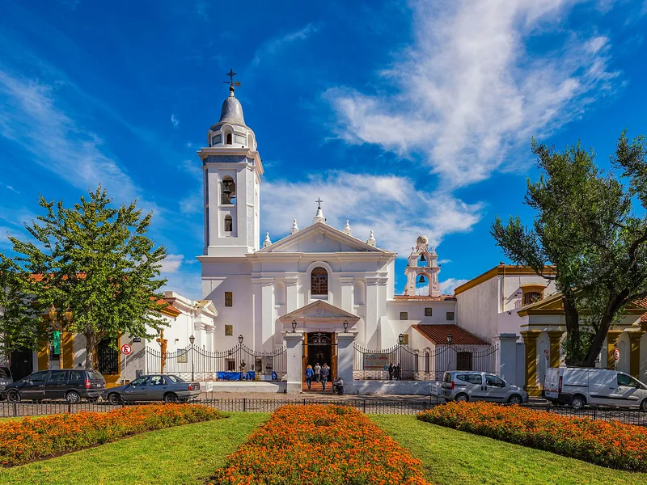
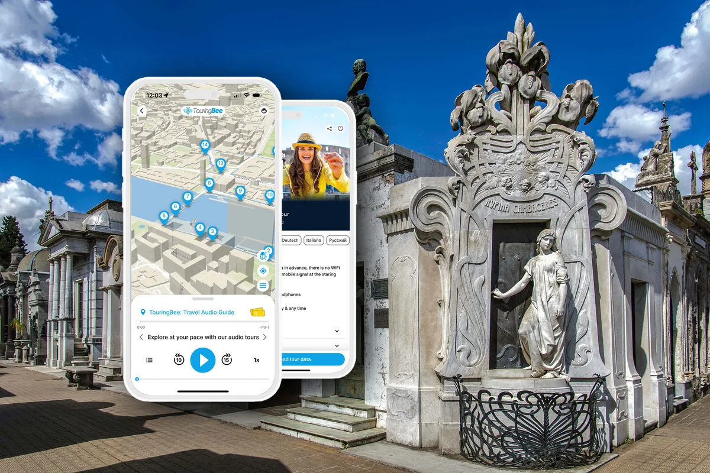
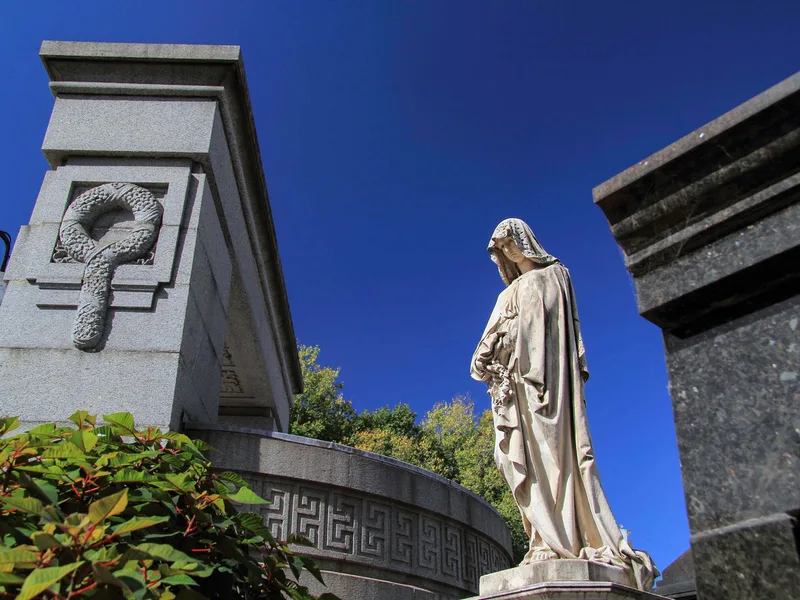

Der Friedhof Recoleta sieht aus, als hätte er immer schon hier gestanden: eine ummauerte Stadt aus Marmor auf fünfeinhalb Hektar, 4.600 Grüfte in gepflasterten Gassen, ein Friedhof, der Besucher von allen Kontinenten anzieht. Tatsächlich ist fast nichts von dem, was Sie sehen, älter als 1881. Der Friedhof selbst ist jünger als die Republik, die ihn füllt, und angefangen hat er als Gemüsegarten hinter einer Kirche am Stadtrand. Dies ist die Geschichte, wie aus dem Garten die Stadt der Toten wurde — und was jedes Kapitel für Sie sichtbar hinterlassen hat.
Die Menschen in den Grüften — Präsidenten, ein Friedhofswärter, ein Mädchen in einer Jugendstiltür — haben ihre eigenen Geschichten, und diese Seite lässt die meisten davon bewusst aus: Sie gehören in den TouringBee-Audioguide, 22 Stationen auf einer Offline-Karte, erzählt an den Türen, wo sie passiert sind. Hier geht es um die Geschichte des Ortes selbst.
Sie planen den Besuch? Beginnen Sie mit unserem kompletten Guide zum Friedhof Recoleta und kommen Sie hierher zurück, wenn Sie wissen wollen, warum er so aussieht, wie er aussieht.
Zwei Jahrhunderte im Überblick
| Jahr | Was geschah | Was Sie heute noch sehen |
|---|---|---|
| 1732 | Die Recoletos-Mönche vollenden die Kirche Nuestra Señora del Pilar am Rand von Buenos Aires | Die Basilika neben dem Tor, die zweitälteste Kirche der Stadt |
| 1822 | Das Kloster wird aufgelöst; sein Garten öffnet am 17. November als Cementerio del Norte, der erste öffentliche Friedhof | Die ältesten erhaltenen Grüfte, in den Gassen nahe der Basilika |
| 1863 | Ein Streit um die Bestattung eines Freimaurers beendet die Hoheit der Kirche über den Friedhof | Nichts in Stein — die Geschichte wird an der Tür der Basilika erzählt |
| 1871 | Gelbfieber; die Wohlhabenden ziehen nach Norden nach Recoleta; Chacarita öffnet für die Toten der Stadt | Die soziale Geografie von Buenos Aires: Recoleta für die wenigen, Chacarita für die vielen |
| 1881 | Torcuato de Alvear lässt den Friedhof von Juan Antonio Buschiazzo zu einer Stadt im Kleinen umbauen | Der dorische Portikus, die Umfassungsmauer, die Alleen und Blöcke |
| 1890–1930 | Die großen Familien wetteifern in Marmor: Klassizismus, Neugotik, Jugendstil, Art déco | Fast jede Gruft, die Sie fotografieren werden |
| 1945–46 | Die ersten Gräber werden zu nationalen Denkmälern erklärt; ein Dekret von 1946 listet 53 auf einmal | Kleine Plaketten an mehr als neunzig Grüften |
| 1949 | Der Cementerio del Norte wird offiziell in Cementerio de la Recoleta umbenannt | Der Name auf Ihrem Ticket |
| 1976 | Der Leichnam von Eva Perón wird nach 24 Jahren in der Familiengruft der Duartes beigesetzt | Das Grab, nach dem jeder Besucher fragt, in einer Seitengasse |
| 2003 / 2007 | Eine dritte Restaurierungskampagne; das Eingangstor wird zum nationalen Denkmal erklärt | Die Jahreszahlen 1822, 1881 und 2003 im Boden des Portikus |
Vor dem Friedhof: Mönche am Stadtrand
Anfang des 18. Jahrhunderts bestand das Land nördlich der kleinen Kolonialhafenstadt aus Feldern, Flussufern und ein paar Höfen. Eine Gemeinschaft von Franziskaner-Rekollekten — recoletos, Mönche, die sich für ein strengeres Leben aus der Stadt zurückzogen — ließ sich genau deshalb dort nieder, weil es weit weg von allem war. 1732 war ihre Kirche fertig: Nuestra Señora del Pilar, weiß, schlicht und kolonial, die bis heute neben dem Friedhofstor steht und kostenlos zu besichtigen ist. Hinter dem Kloster lag der Obst- und Gemüsegarten der Mönche. Das Viertel bekam seinen Namen von ihnen, und zwei Jahrhunderte später auch der Friedhof.

1822: der erste öffentliche Friedhof
Die Unabhängigkeit veränderte, wo die Toten liegen durften. Das koloniale Buenos Aires begrub seine Menschen in und um die Kirchen; die neue republikanische Regierung der Provinz Buenos Aires unter Gouverneur Martín Rodríguez und seinem Reformminister Bernardino Rivadavia wollte die Bestattungen aus hygienischen Gründen aus der Stadt heraus und aus politischen Gründen aus den Händen der Kirche. Die Recoletos wurden im Zuge von Rivadavias Kirchenreform aufgelöst, und ihr Garten bot sich an. Am 17. November 1822 öffnete dort der Cementerio del Norte als erster öffentlicher Friedhof der Stadt. Der französische Ingenieur Próspero Catelin, der auch der Metropolitankathedrale ihre Tempelfassade gab, legte das Gelände an; bis 1828, unter Gouverneur Manuel Dorrego, hatte der Friedhof die Ausdehnung erreicht, die er bis heute hat.
Der frühe Friedhof hatte mit der Marmorstadt von heute nichts gemein: Gras, schlichte Grabzeichen, eine Lehmmauer, ein Eisentor. Und seine ersten Bewohner waren keine Präsidenten. Nach Angaben der Stadt waren die ersten beiden Bestattungen Juan Benito, ein freigelassenes schwarzes Kind, und María Dolores Maciel, eine junge Frau. Der Ruf als Friedhof der Elite kam später; es lohnt sich, im Kopf zu behalten, dass Recoleta als öffentlicher Friedhof für alle begann.
1863: das Jahr, in dem die Kirche den Friedhof verlor
Vierzig Jahre lang war der Friedhof dem Namen nach öffentlich, in der Praxis aber katholisch: Die Kirche entschied, wer in geweihter Erde liegen durfte. 1863 zerbrach das. Ein Freimaurer starb, nachdem er die Sterbesakramente abgelehnt hatte; der Bischof verweigerte ihm das Begräbnis; die Familie wandte sich über den Kopf des Bischofs hinweg an Präsident Bartolomé Mitre, und am Ende des Streits war der Friedhof säkularisiert — eine städtische Einrichtung, offen für Tote jeden Glaubens und ohne Glauben. Es ist der eine Moment, in dem die Freimaurerei Recoleta wirklich verändert hat. Genau deshalb widerstehen wir der Versuchung, in jeden Zirkel und jede Leiter an den Türen ein Freimaurerzeichen hineinzulesen (siehe unseren Symbol-Decoder). Wie der Streit tatsächlich ablief, Brief für Brief, erzählt die Audioroute an der Basilika, Station 2; hier zählen die politischen Folgen. Ab 1863 war ein Grab in Recoleta eine Aussage über Familie und Nation, nicht über den Glauben.
1871: eine Epidemie zeichnet die Stadt neu
Im Sommer 1871 tötete das Gelbfieber Tausende in den dicht besiedelten Südvierteln von Buenos Aires — San Telmo, Monserrat —, und die Familien, die es sich leisten konnten, zogen nach Norden: auf höheres Gelände, in bessere Luft, in das Viertel rund um die alte Kirche der Recoletos. Die Epidemie überforderte auch den Cementerio del Norte: Noch im selben Jahr eröffnete die Stadt weit im Westen ein neues Gelände, den späteren Friedhof Chacarita, und ein „Totenzug“ brachte die Särge aus dem Zentrum hinaus. Seitdem teilen die beiden Friedhöfe die Stadt unter sich auf: Chacarita riesig und demokratisch, Recoleta klein und exklusiv. Die Elite war nebenan eingezogen, und nebenan würde sie auch begraben werden.

Hören Sie die Geschichten direkt an den Gräbern
22 Stationen · ca. 1,5 Std. · Offline-Karte — €9.99, einmal zahlen, kein Abo.
Zum Audioguide1881: ein Bürgermeister baut eine Stadt für die Toten
Torcuato de Alvear, der die Stadtkommission des gerade zur Bundeshauptstadt erklärten Buenos Aires leitete und 1883 dessen erster Bürgermeister (intendente) wurde, wollte eine Hauptstadt, die aussieht wie Paris: Boulevards, Parks, Fassaden. Dem Friedhof verpasste er dieselbe Kur. 1881 baute ihn der aus Italien stammende und äußerst produktive Architekt Juan Antonio Buschiazzo zu einer Stadt im Kleinen um — ein dorischer Portikus an der Junín mit lateinischen Inschriften und steinernen Allegorien, eine Umfassungsmauer, schnurgerade gepflasterte Alleen, Blöcke von Familiengrabstätten, die wie Stadthäuser zu den Gassen hin stehen, und eine zentrale Kreuzung, an der heute ein weißer Christus steht. Alles, woran Sie sich heute orientieren, stammt aus diesem Plan. Der Portikus ist sein deutlichstes Stück; unser Architektur-Artikel entschlüsselt seine Symbole eines nach dem anderen.
Der Umbau gab dem Friedhof auch sein Personal und seine Regeln. Einer der Wärter, der hier von 1881 bis 1910 arbeitete, sparte sein Leben lang auf eine eigene Grabstätte zwischen den Familien, denen er diente — und wurde dabei zur Legende. Seine Statue mit dem Besen in der Hand ist eine Station der Audioroute, und die Geschichte hört man dort besser, als man sie hier liest.

1890–1930: der Wettstreit in Marmor
Argentiniens Exportboom machte Buenos Aires zu einer der reichsten Städte der Welt, und die Familien, die sie regierten — Großgrundbesitzer, Bankiers, Generäle, Präsidenten —, bauten in Recoleta so, wie sie an der Avenida Alvear bauten: mit importiertem Carrara-Marmor, französischen und italienischen Bildhauern, Bronzetüren, Buntglas, Kuppeln. Eine Grabstätte an der Hauptallee konnte so viel kosten wie eine Wohnung in der Innenstadt. Die Stile folgten der europäischen Mode der Reihe nach: Klassizismus, dann Neugotik, Jugendstil um 1900, Art déco in den 1930ern — und ein paar Familien schauten weiter, nach Ägypten und ins präkolumbische Amerika. Fast jede Gruft, die Sie fotografieren werden, stammt aus diesen vierzig Jahren, und ebenso der internationale Ruf des Friedhofs: Der naheliegende Vergleich mit dem Père Lachaise in Paris wurde schon vor hundert Jahren gezogen.
Das 20. Jahrhundert: vom Privatbesitz zum Kulturerbe
In den 1940ern begann die Republik, ihren Friedhof als Geschichte zu behandeln. 1940 nahm eine nationale Kommission die Erfassung des Kulturerbes auf, 1945 wurden die ersten Gräber in Recoleta zu nationalen Denkmälern erklärt; ein einziges Dekret von 1946 setzte gleich 53 auf einmal auf die Liste. Seitdem kommen immer wieder einzelne hinzu — heute sind es mehr als neunzig Grüfte —, und 2007 wurde das Eingangstor selbst unter Schutz gestellt. 1949 wurde der Cementerio del Norte offiziell in Cementerio de la Recoleta umbenannt — der Name, den ohnehin seit hundert Jahren alle benutzten.
Und im Oktober 1976 fand in einer Seitengasse, fast ohne Zeremonie, die berühmteste Bestattung des 20. Jahrhunderts statt: Der Leichnam von Eva Perón wurde nach 24 Jahren Exil, Diebstahl und Verstecken in der Familiengruft der Duartes unter mehreren Schichten Beton beigesetzt. Diese Reise hat einen eigenen Artikel. Von da an hatte der Friedhof zwei Arten von Besuchern — die Familien, die immer schon gekommen waren, und die Welt.
Heute: aktiver Friedhof und Freiluftmuseum
Recoleta ist nach wie vor ein städtischer Friedhof, verwaltet von der Stadt Buenos Aires, mit Beerdigungen und Familienbesuchen jede Woche; die Stadt zählt rund 350.000 Bestattungen in zweihundert Jahren. Zugleich ist er eine der wichtigsten Sehenswürdigkeiten der Stadt: seit 2022 mit Eintritt für Nicht-Residenten, mit täglichen offiziellen Führungen auf Spanisch und seit 2003 mit einer Restaurierungskampagne, deren Jahreszahl neben 1822 und 1881 im Boden des Portikus eingelassen ist. Internationale Ranglisten waren ihm wohlgesonnen — die BBC zählte ihn 2011 zu den besten Friedhöfen der Welt, CNN 2013 zu den zehn schönsten —, und die Katzen, die hier einst zu Dutzenden lebten, haben Freiwillige größtenteils in neue Familien vermittelt. Die Gassen, durch die Sie gehen, sind die von Buschiazzo; die Toten, die Sie suchen, stammen meist aus der Belle Époque; die Institution ist die von Rivadavia. Alle drei Schichten sind gleichzeitig sichtbar — und genau das macht den Ort lesenswert, nicht nur fotogen.
Aus meinem eigenen Besuch
Vor Ort sieht Geschichte aus wie Instandhaltung. Als ich um neun Uhr morgens durch die Gassen ging, im flachen Licht, das von der Junín über die Mauer fällt, sah ich auf wenigen Metern immer wieder denselben Kontrast: eine Gruft, bis auf den Stein restauriert, die Bronze poliert, frische Blumen hinter dem Glas — und gleich daneben eine mit zerbrochener Scheibe, einer Wendeltreppe hinunter ins Dunkel und Särgen auf der Ebene darunter, eine Familie, die erloschen oder weggezogen ist oder einfach nicht mehr zahlt. Der Friedhof ist kein Denkmal, das 1881 fertig wurde. Er ist zweihundert Jahre, in denen Familien dieselben fünf Hektar immer wieder umschreiben — und das Umschreiben geht weiter.
Ein Wort dazu, wo Sie sich befinden
Weil der Friedhof in Betrieb ist, sind die Regeln einfach: Lassen Sie Trauerzügen und Familien an einer Gruft den Vortritt, fassen Sie keine Türen an, betreten Sie keine offenen Grüfte und sprechen Sie in den Seitengassen leise. Die Argentinier kommen hierher, um ihre Toten zu besuchen, nicht, um auf Ihrem Foto zu landen.
Audioguide zum Selbsterkunden: Friedhof RecoletaSofortzugang
- 100 % offline — auf dem Friedhof brauchen Sie weder WLAN noch mobile Daten
- Offline-Karte mit der Route — jede Geschichte starten Sie selbst am Grab
- Audiosprachen: Englisch, Spanisch
- Läuft auf iOS & Android
- 22 Stationen, etwa 1,5 Stunden in Ihrem Tempo
Das Wichtigste in Kürze
Ein Klostergarten 1732, ein öffentlicher Friedhof 1822, ein ziviler 1863, der Friedhof der Elite nach 1871, eine Stadt im Kleinen ab 1881, Kulturerbe seit 1945 und Pilgerort seit 1976. Gehen Sie mit diesen sieben Daten im Kopf hinein, und die Gassen sind kein Labyrinth aus schönem Stein mehr, sondern das, was sie sind: die Biografie einer Stadt, in Marmor erzählt von den Leuten, die sie regierten.
Der Audioguide erzählt die andere Hälfte — wer diese Menschen waren — an 22 dieser Türen: Zum Audioguide — 22 Stationen · offline · €9.99
Häufige Fragen
Wann wurde der Friedhof Recoleta gegründet?
Er wurde am 17. November 1822 als Cementerio del Norte eröffnet, der erste öffentliche Friedhof von Buenos Aires, auf dem ehemaligen Garten der Recoletos-Mönche. Den Plan entwarf der französische Ingenieur Próspero Catelin; die Entscheidung trafen Gouverneur Martín Rodríguez und sein Minister Bernardino Rivadavia.
Warum heißt er Recoleta?
Nach den Franziskaner-Rekollekten (recoletos), die sich Anfang des 18. Jahrhunderts am damaligen Stadtrand niederließen und die Kirche Nuestra Señora del Pilar bauten, fertiggestellt 1732. Das Viertel übernahm ihren Namen, und 1949 offiziell auch der Friedhof.
Wer wurde als Erster auf dem Friedhof Recoleta begraben?
Nach Angaben der Stadt waren die ersten beiden Bestattungen Juan Benito, ein freigelassenes schwarzes Kind, und María Dolores Maciel, eine junge Frau. Der Friedhof der Präsidenten begann mit zwei Menschen, an die sich niemand erinnert.
Warum verlor die Kirche die Kontrolle über den Friedhof?
Wegen eines Streits im Jahr 1863 um die Bestattung eines Freimaurers, der die Sterbesakramente abgelehnt hatte. Die Familie wandte sich an Präsident Mitre; das Ergebnis: Der Friedhof wurde eine zivile, städtische Einrichtung. Die ganze Geschichte erzählt die TouringBee-Audioroute an der Tür der Basilika.
Ist der Friedhof Recoleta noch in Betrieb?
Ja. Er ist ein aktiver städtischer Friedhof mit Beerdigungen und Familienbesuchen jede Woche; mehr als neunzig seiner Grüfte sind nationale Denkmäler, und das Eingangstor steht seit 2007 unter Schutz. Besucher lassen Trauernden den Vortritt.
Warum liegt Evita in Recoleta und nicht an einem prächtigeren Ort?
Weil die Familiengruft der Duartes dort steht. Nach einer 24-jährigen Odyssee wurde ihr Leichnam 1976 darin beigesetzt, in einer Seitengasse, unter schwerem Beton. Unser Evita-Artikel erzählt die ganze Geschichte; der Audioguide erzählt sie direkt an der Gruft.
Weiterlesen
Einige Links auf dieser Seite sind Affiliate-Links (GetYourGuide, Booking.com, TouringBee). Wenn Sie darüber buchen, erhalten wir unter Umständen eine kleine Provision — für Sie ändert sich am Preis nichts. Auf unsere Empfehlungen hat das keinen Einfluss. Mehr dazu in unserem Affiliate-Hinweis.